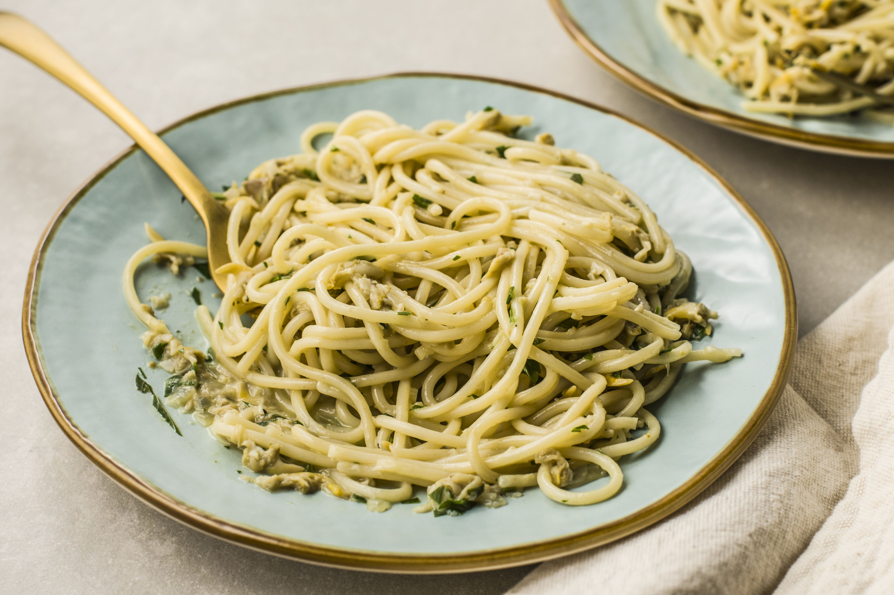

Clam Sauce

A delicious, light sauce utilizing canned clams.
Ingredients
- 3 cans of chopped clams, with juice
- 1 bottle clam juice
- 1/4 C olive oie
- 1 tsp dried basil
- 1 tbsp dried parsley
- 1 tbsp mince garlic
- Salt
- Black pepper
- Crushed red pepper
- 1 lb pasta of your choice
Instructions
- Start boiling the water for the pasta.
- In a large skillet, heat the olive oil over medium-high.
- Add the garlic and cook for a minute or two until lightly browned.
- Add the juice from the cans of clams and the bottle of clam juice. Add the basil, parsley, and pinch of crushed red pepper.
- Bring to a boil, then lower the heat and simmer for a few minutes, while the pasta cooks.
- A couple of minutes before the pasta is ready, add the clams to the sauce. Add salt and black pepper to taste.
Return to recipe index